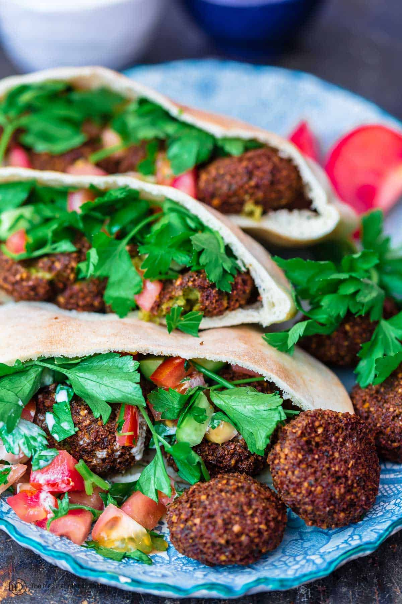

üç≤ Falafel

DESCRIPTION
Falafel is a popular Middle Eastern “fast food” made of a mixture of chickpeas (or fava beans), fresh herbs, and spices that are formed into a small patties or balls. It’s thought that falafel originated in Egypt as Coptic Christians looked for a hearty replacement for meat during long seasons of fasting or lent. It has also become a popular vegan food in Egypt and throughout the Middle East.
INGREDIENTS
- Dried chickpeas: AVOID using canned chickpeas! Dried chickpeas (that have been soaked in water for 24 hours) are an important ingredient that will give your falafel the right consistency and taste. (Tip: I usually add about ½ teaspoon of baking soda to the soaking water to help soften the dry chickpeas.)
- Fresh herbs: fresh parsley, cilantro, and dill are key to this authentic recipe
- Onion: I typically use yellow onions, but white or red onions would work.
- Garlic: for best flavor, use fresh garlic cloves.
- Kosher salt and pepper: to taste.
- Spices: cumin, coriander, and a little cayenne pepper. Along with the fresh herbs, this trio of spices is what gives falafel it's bold authentic taste.
INSTRUCTIONS
-
Soak chickpeas for 24 hours. Cover them in plenty of water and add baking soda to help soften them as they soak. The chickpeas will at least double in size as they soak. Drain very well.
-
Make mixture. Add chickpeas, fresh herbs (parsley, cilantro, and dill), garlic, onion, and spices to food processor and pulse a little bit at a time until the mixture is finely ground. You’ll know it’s ready when the texture is more like coarse meal.
-
Form patties or balls. Once the falafel mixture has been plenty chilled, stir in baking powder and toasted sesame seeds, then scoop golf ball-sized balls and form into balls or patties (if you go the patties route, do not flatten them too much, you want them to still be nice and fluffy when they're cooked.)
home page